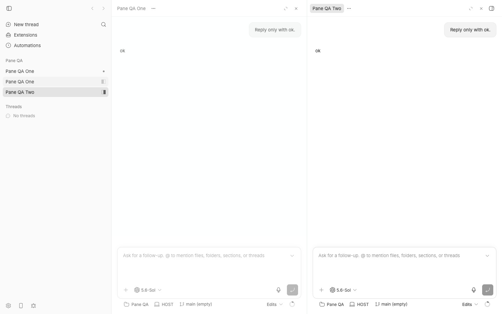
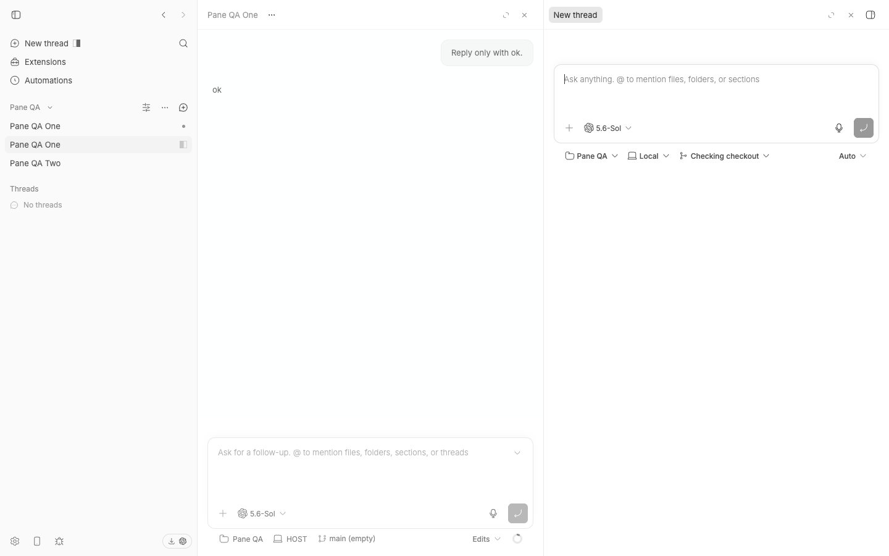

#2795 · Scoped thread creation replaces a focused split pane
Verdict: REPRODUCED · Root-cause confidence: high
1. TL;DR
A project create button removed the focused thread from a two-pane workspace. The composer then used that pane. The action navigates directly to the composer route. The route reconciler replaces the focused pane when no composer pane exists. Two clean checkouts produced the same result.
2. Claims vs findings
| Claim | Status | Evidence |
|---|---|---|
| A project create button replaces the focused thread pane. | Verified | Both browser runs changed [thread, thread] to [thread, new-thread]. |
| The project, section, and Threads create actions use one direct navigation handler. | Verified by source | All three callbacks call openRootComposeForProject. |
| An existing composer keeps singleton behavior. | Verified by source | The split helper finds existing content and focuses its pane. |
| The current pane cap is eight. | Verified | MAX_PANES is eight. The focused operation tests passed and enforce this cap. |
| Content created at the cap replaces the focused pane. | Verified by source | The split helper selects replacePaneContent when the pane count reaches the cap. |
| The scoped create action must always split instead of requiring a modifier. | Product decision | The current product has both direct navigation and modifier-based split behavior. |
3. Environment
- Trusted bb commit:
688eb4251c5b5c53c5a56f85baae6d47966355ec. - The public target repository and the configured
origin/mainhad the same commit. - Host: macOS Darwin 25.6.0, arm64.
- Node 22.22.3 and Vitest 4.1.1.
- First isolated app and server ports: 11592 and 19592.
- Second isolated app and server ports: 18670 and 26670.
- Each checkout used a new launcher data directory, project, environment, and two Codex threads.
Both checkouts completed a frozen install and a full Turbo build. The saved images replace the local machine label with HOST.
4. Minimal reproduction
- Check out
get-bb/bbat688eb4251c5b5c53c5a56f85baae6d47966355ec. - Run
pnpm install --frozen-lockfile --prefer-offline. - Run
pnpm exec turbo run build. - Run
scripts/bb-dev-app current. - Create one isolated project and two short threads.
- Run the browser reproduction below with the new app URL and entity IDs.
The script seeds the supported split-layout storage format. It then opens two real thread panes and clicks the real project create button.
Expected
{
"beforePaneKinds": ["thread", "thread"],
"afterPaneKinds": ["thread", "thread", "new-thread"]
}
Actual in both clean checkouts
{
"pathname": "/",
"beforePaneKinds": ["thread", "thread"],
"afterPaneKinds": ["thread", "new-thread"],
"beforeFocusedPaneId": "pane-2",
"afterFocusedPaneId": "pane-2",
"replacementObserved": true
}


Browser reproduction
const page = await browser.getPage("issue-2795");
const config = {
appUrl: "http://localhost:APP_PORT",
projectId: "PROJECT_ID",
projectName: "Pane QA",
threadOne: "THREAD_ONE",
threadTwo: "THREAD_TWO",
};
const storedLayout = {
version: 1,
layout: {
root: {
type: "split",
dir: "row",
sizes: [0.5, 0.5],
children: [
{
type: "pane",
paneId: "pane-1",
content: {
kind: "thread",
projectId: config.projectId,
threadId: config.threadOne,
},
},
{
type: "pane",
paneId: "pane-2",
content: {
kind: "thread",
projectId: config.projectId,
threadId: config.threadTwo,
},
},
],
},
focusedPaneId: "pane-2",
},
};
await page.goto(config.appUrl);
await page.evaluate((value) => {
const text = JSON.stringify(value);
localStorage.setItem("bb.splitLayout", text);
sessionStorage.setItem("bb.splitLayout", text);
}, storedLayout);
await page.goto(
`${config.appUrl}/projects/${config.projectId}/threads/${config.threadTwo}`,
);
await page.waitForSelector('[data-split-pane-id="pane-2"]', {
visible: true,
timeout: 30000,
});
const readLayout = () =>
page.evaluate(() =>
JSON.parse(sessionStorage.getItem("bb.splitLayout")).layout,
);
const listKinds = (node) =>
node.type === "pane"
? [node.content.kind]
: node.children.flatMap(listKinds);
const before = await readLayout();
await page.click(`[aria-label="New thread in ${config.projectName}"]`);
await page.waitForFunction(() => location.pathname === "/", {
timeout: 30000,
});
const after = await readLayout();
({
beforePaneKinds: listKinds(before.root),
afterPaneKinds: listKinds(after.root),
replacementObserved:
listKinds(after.root).filter((kind) => kind === "thread").length === 1,
});
Focused operation tests
pnpm exec vitest run + src/lib/split-layout/ops.test.ts + src/views/thread-detail/splitThreadNavigation.test.ts Test Files 2 passed (2) Tests 18 passed (18)
5. Root cause
The scoped create handler stores the project selection and navigates to the root composer route. It does not change the split layout first.
setRootComposeProjectId(projectId);
onProjectSelect?.();
navigate(getRootComposeRoutePath(), {
state: { focusPrompt: true, ...(sectionId ? { sectionId } : {}) },
});
See ProjectList.tsx lines 1457–1483.
The workspace maps the new URL to composer content. Its route effect calls the reconciler.
setLayout((previous) => reconcileLayoutForContent(previous, currentContent), );
See SplitThreadArea.tsx lines 283–290.
The reconciler focuses matching content. When no matching pane exists, it replaces the focused pane.
const existing = findPaneByContent(layout.root, content);
if (existing !== null) {
return setFocus(layout, existing.paneId);
}
return replacePaneContent(layout, layout.focusedPaneId, content);
See splitThreadNavigation.ts lines 105–125.
The application already has a helper that adds content to the right. It also preserves composer singleton behavior. The scoped create handler does not use this helper.
See openPaneContentInSplit.ts lines 29–49.
The cap behavior has a separate cause. MAX_PANES equals eight. The split helper replaces focused content at that count.
See ops.ts line 11 and the cap branch.
6. Proposed fix (first principles)
Choose one scoped-create policy first. The action can always add a pane, or it can require the same modifier as the global action. Then route each scoped create action through the existing split helper. Preserve the project, section, prompt-focus, compact-view, and singleton state.
Choose the pane-cap policy separately. A higher cap changes limits and documentation. A non-destructive refusal needs clear user feedback. These choices need product review before an automatic fix is safe.
7. Related issues
No open pull request links to this issue. Recent ui issues do not describe this scoped-create path.
8. Verification
The first clean checkout used app port 11592. The second clean checkout used app port 18670. Each run used a new project, threads, server port, and data directory. Both runs returned replacementObserved: true. The second run required no report correction.
9. Appendix
Commands
git fetch origin main pnpm install --frozen-lockfile --prefer-offline pnpm exec turbo run build scripts/bb-dev-app current node packages/scripts/dist/commands/run-cli.js thread spawn ... doobie --headless run browser-repro.js pnpm exec vitest run src/lib/split-layout/ops.test.ts + src/views/thread-detail/splitThreadNavigation.test.ts
The issue data was untrusted. The investigation did not open its links or run its code, branch, or external artifacts.